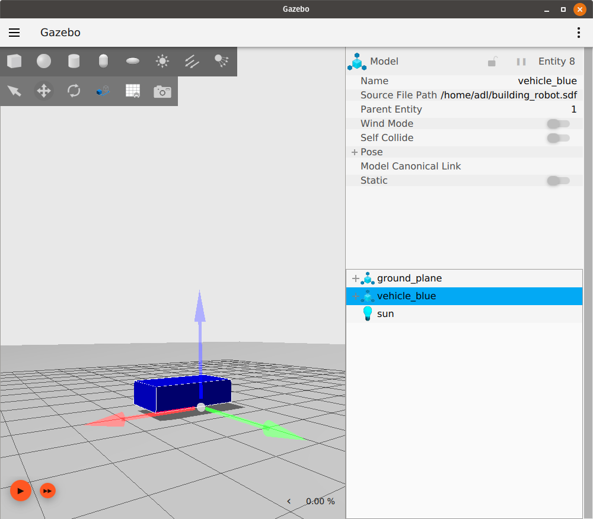

Building your own robot#
In this tutorial we will learn how to build our own robot in SDFormat. We will build a simple two wheeled robot.
You can find the finished SDF file for the tutorial here.
What is SDF#
SDFormat (Simulation Description Format), sometimes abbreviated as SDF, is an XML format that describes objects and environments for robot simulators, visualization, and control.
Building a world#
We will start by building a simple world and then build our robot in it. Open a new file called building_robot.sdf and copy the following code to it.
<?xml version="1.0" ?>
<sdf version="1.8">
<world name="car_world">
<physics name="1ms" type="ignored">
<max_step_size>0.001</max_step_size>
<real_time_factor>1.0</real_time_factor>
</physics>
<plugin
filename="libignition-gazebo-physics-system.so"
name="ignition::gazebo::systems::Physics">
</plugin>
<plugin
filename="libignition-gazebo-user-commands-system.so"
name="ignition::gazebo::systems::UserCommands">
</plugin>
<plugin
filename="libignition-gazebo-scene-broadcaster-system.so"
name="ignition::gazebo::systems::SceneBroadcaster">
</plugin>
<light type="directional" name="sun">
<cast_shadows>true</cast_shadows>
<pose>0 0 10 0 0 0</pose>
<diffuse>0.8 0.8 0.8 1</diffuse>
<specular>0.2 0.2 0.2 1</specular>
<attenuation>
<range>1000</range>
<constant>0.9</constant>
<linear>0.01</linear>
<quadratic>0.001</quadratic>
</attenuation>
<direction>-0.5 0.1 -0.9</direction>
</light>
<model name="ground_plane">
<static>true</static>
<link name="link">
<collision name="collision">
<geometry>
<plane>
<normal>0 0 1</normal>
</plane>
</geometry>
</collision>
<visual name="visual">
<geometry>
<plane>
<normal>0 0 1</normal>
<size>100 100</size>
</plane>
</geometry>
<material>
<ambient>0.8 0.8 0.8 1</ambient>
<diffuse>0.8 0.8 0.8 1</diffuse>
<specular>0.8 0.8 0.8 1</specular>
</material>
</visual>
</link>
</model>
</world>
</sdf>
Save the file, navigate to the directory where you saved the file and launch the simulator:
ign gazebo building_robot.sdf
Note: You can name your file any name and save it anywhere on your computer.
You should see an empty world with just a ground plane and a sun light. Check World demo to learn how to build your own world.
Building a model#
Under the </model> tag we will add our robot model as follows:
Defining the model#
<model name='vehicle_blue' canonical_link='chassis'>
<pose relative_to='world'>0 0 0 0 0 0</pose>
Here we define the name of our model vehicle_blue, which should be a unique name among its siblings (other tags or models on the same level).
Each model may have one link designated as the canonical_link, the implicit frame of the model is attached to this link. If not defined, the first <link> will be chosen as the canonical link.
The <pose> tag is used to define the position and orientation of our model and the relative_to attribute is used to define the pose of the model relative to any other frame.
If relative_to is not defined, the model’s <pose> will be relative to the world.
Let’s make our pose relative to the world. The values inside the pose tag are as follows: <pose>X Y Z R P Y</pose>, where the X Y Z represent the position of the frame and R P Y represent the orientation in roll pitch yaw.
We set them to zeros which makes the two frames (the model and the world) identical.
Links forming our robot#
Every model is a group of links (can be just one link) connected together with joints.
Chassis#
<link name='chassis'>
<pose relative_to='__model__'>0.5 0 0.4 0 0 0</pose>
We define the first link, the chassis of our car and it’s pose relative to the model.
Inertial properties#
<inertial> <!--inertial properties of the link mass, inertia matix-->
<mass>1.14395</mass>
<inertia>
<ixx>0.095329</ixx>
<ixy>0</ixy>
<ixz>0</ixz>
<iyy>0.381317</iyy>
<iyz>0</iyz>
<izz>0.476646</izz>
</inertia>
</inertial>
Here we define the inertial properties of the chassis like the <mass> and the <inertia> matrix. The values of the inertia matrix for primitive shapes can be calculated using this tool.
Visual and collision#
<visual name='visual'>
<geometry>
<box>
<size>2.0 1.0 0.5</size>
</box>
</geometry>
<!--let's add color to our link-->
<material>
<ambient>0.0 0.0 1.0 1</ambient>
<diffuse>0.0 0.0 1.0 1</diffuse>
<specular>0.0 0.0 1.0 1</specular>
</material>
</visual>
As the name suggests, the <visual> tag is responsible for how our link will look.
We define the shape of our link inside the <geometry> tag as a <box> (cuboid) and then specify the three dimensions (in meters) of this box inside the <size> tag.
Then, inside the <material> tag we define the material of our link.
Here we defined the <ambient>, <diffuse> and <specular> colors in a set of four numbers red/green/blue/alpha each in range [0, 1].
<collision name='collision'>
<geometry>
<box>
<size>2.0 1.0 0.5</size>
</box>
</geometry>
</collision>
</link>
</model>
The <collision> tag defines the collision properties of the link, how our link will react with other objects and the effect of the physics engine on it.
Note: <collision> can be different from the visual properties, for example, simpler collision models are often used to reduce computation time.
After copying all the parts above into the world file in order, run the world again:
ign gazebo building_robot.sdf
Our model should look like this:

In the top left toolbar, click the Translate icon, then select your model. You should see three axes like this:

These are the axes of our model where red is the x-axis, green is the y-axis and blue is the z-axis.
Left wheel#
Let’s add wheels to our robot. The following code goes after the </link> tag and before the </model> tag. All the links and joints belonging to the same model should be defined before the </model>.
<link name='left_wheel'>
<pose relative_to="chassis">-0.5 0.6 0 -1.5707 0 0</pose>
<inertial>
<mass>1</mass>
<inertia>
<ixx>0.043333</ixx>
<ixy>0</ixy>
<ixz>0</ixz>
<iyy>0.043333</iyy>
<iyz>0</iyz>
<izz>0.08</izz>
</inertia>
</inertial>
We defined the name of our link left_wheel and then defined its <pose> relative_to the chassis link.
The wheel needed to be placed on the left to the back of the chassis so that’s why we chose the values for pose as -0.5 0.6 0.
Also, our wheel is a cylinder, but on its side.
That’s why we defined the orientation value as -1.5707 0 0 which is a -90 degree rotation around the x-axis (the angles are in radians).
Then we defined the inertial properties of the wheel, the mass and the inertia matrix.
Visualization and Collision#
<visual name='visual'>
<geometry>
<cylinder>
<radius>0.4</radius>
<length>0.2</length>
</cylinder>
</geometry>
<material>
<ambient>1.0 0.0 0.0 1</ambient>
<diffuse>1.0 0.0 0.0 1</diffuse>
<specular>1.0 0.0 0.0 1</specular>
</material>
</visual>
<collision name='collision'>
<geometry>
<cylinder>
<radius>0.4</radius>
<length>0.2</length>
</cylinder>
</geometry>
</collision>
</link>
The <visual> and the <collision> properties are similar to the previous link, except the shape of our link has the shape of <cylinder> that requires two attributes: the <radius> and the <length> of the cylinder.
Save the file and run the world again, our model should look like this:

Right wheel#
<!--The same as left wheel but with different position-->
<link name='right_wheel'>
<pose relative_to="chassis">-0.5 -0.6 0 -1.5707 0 0</pose> <!--angles are in radian-->
<inertial>
<mass>1</mass>
<inertia>
<ixx>0.043333</ixx>
<ixy>0</ixy>
<ixz>0</ixz>
<iyy>0.043333</iyy>
<iyz>0</iyz>
<izz>0.08</izz>
</inertia>
</inertial>
<visual name='visual'>
<geometry>
<cylinder>
<radius>0.4</radius>
<length>0.2</length>
</cylinder>
</geometry>
<material>
<ambient>1.0 0.0 0.0 1</ambient>
<diffuse>1.0 0.0 0.0 1</diffuse>
<specular>1.0 0.0 0.0 1</specular>
</material>
</visual>
<collision name='collision'>
<geometry>
<cylinder>
<radius>0.4</radius>
<length>0.2</length>
</cylinder>
</geometry>
</collision>
</link>
The right wheel is similar to the left wheel except for its position.
Defining an arbitrary frame#
As of SDF 1.7 (Fortress uses SDF 1.8), we can define arbitrary frames. It takes two attributes:
name: the name of the frameattached_to: the name of the frame or the link to which this frame is attached.
Let’s add a frame for our caster wheel as follows:
<frame name="caster_frame" attached_to='chassis'>
<pose>0.8 0 -0.2 0 0 0</pose>
</frame>
We gave our frame name caster_frame and attached it to the chassis link, then the <pose> tag to define the position and orientation of the frame.
We didn’t use the relative_to attribute so the pose is with respect to the frame named in the attached_to attribute, chassis in our case.
Caster wheel#
<!--caster wheel-->
<link name='caster'>
<pose relative_to='caster_frame'/>
<inertial>
<mass>1</mass>
<inertia>
<ixx>0.016</ixx>
<ixy>0</ixy>
<ixz>0</ixz>
<iyy>0.016</iyy>
<iyz>0</iyz>
<izz>0.016</izz>
</inertia>
</inertial>
<visual name='visual'>
<geometry>
<sphere>
<radius>0.2</radius>
</sphere>
</geometry>
<material>
<ambient>0.0 1 0.0 1</ambient>
<diffuse>0.0 1 0.0 1</diffuse>
<specular>0.0 1 0.0 1</specular>
</material>
</visual>
<collision name='collision'>
<geometry>
<sphere>
<radius>0.2</radius>
</sphere>
</geometry>
</collision>
</link>
Our last link is the caster and its pose is with respect to the frame caster_frame we defined above.
As you could notice we closed the pose tag without defining the position or the orientation; in this case the pose of the link is the same as (identity) the frame in relative_to.
In the <visual> and <collision> tags we defined a different shape <sphere> which requires the <radius> of the sphere.
Connecting links together (joints)#
We need to connect these links together; here comes the job of the <joint> tag.
The joint tag connects two links together and defines how they will move with respect to each other.
Inside the <joint> tag we need to define the two links to connect and their relations (way of movement).
Left wheel joint#
<joint name='left_wheel_joint' type='revolute'>
<pose relative_to='left_wheel'/>
Our first joint is the left_wheel_joint.
It takes two attributes: the name name='left_wheel_joint' and the type type='revolute'.
the revolute type gives 1 rotational degree of freedom with joint limits.
The pose of the joint is the same as the child link frame, which is the left_wheel frame.
<parent>chassis</parent>
<child>left_wheel</child>
Every joint connects two links (bodies) together.
Here we connect the chassis with the left_wheel.
chassis is the parent link and left_wheel is the child link.
<axis>
<xyz expressed_in='__model__'>0 1 0</xyz> <!--can be defined as any frame or even arbitrary frames-->
<limit>
<lower>-1.79769e+308</lower> <!--negative infinity-->
<upper>1.79769e+308</upper> <!--positive infinity-->
</limit>
</axis>
</joint>
Here we define the axis of rotation.
The axis of rotation can be any frame, not just the parent or the child link.
We chose the y-axis with respect to the model frame so we put 1 in the y element and zeros in the others.
For the revolute joint we need to define the <limits> of our rotation angle in the <lower> and <upper> tags.
Note: The angles are in radians.
Right wheel joint#
The right_wheel_joint is very similar except for the pose of the joint.
This joint connects the right_wheel with the chassis.
<joint name='right_wheel_joint' type='revolute'>
<pose relative_to='right_wheel'/>
<parent>chassis</parent>
<child>right_wheel</child>
<axis>
<xyz expressed_in='__model__'>0 1 0</xyz>
<limit>
<lower>-1.79769e+308</lower> <!--negative infinity-->
<upper>1.79769e+308</upper> <!--positive infinity-->
</limit>
</axis>
</joint>
Caster wheel joint#
For the caster we need a different type of joint (connection).
We used type='ball' which gives 3 rotational degrees of freedom.
<joint name='caster_wheel' type='ball'>
<parent>chassis</parent>
<child>caster</child>
</joint>
Conclusion#
Run the world:
ign gazebo building_robot.sdf
It should look like this:

Hurray! We build our first robot. You can learn more details about SDFormat tags here. In the next tutorial we will learn how to move our robot around.
Video walk-through#
A video walk-through of this tutorial is available from our YouTube channel: Ignition tutorials: Building a robot.